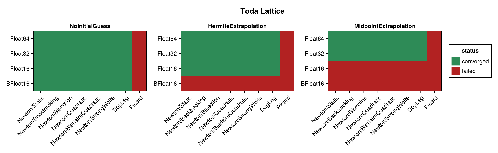
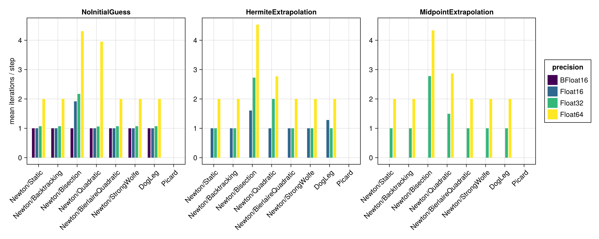
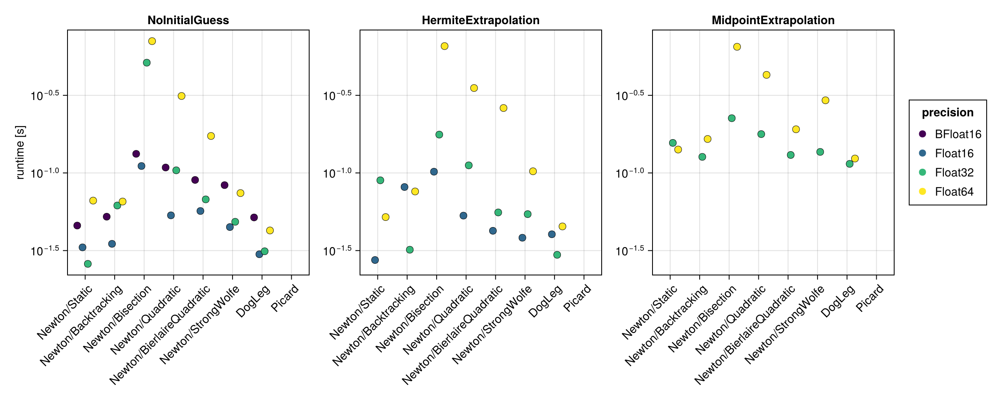
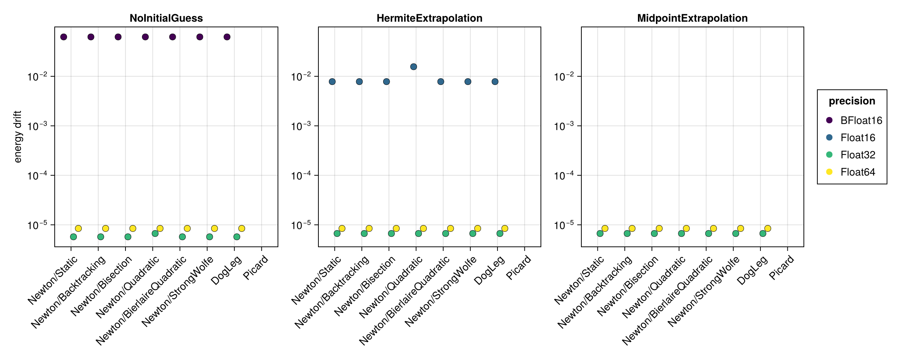
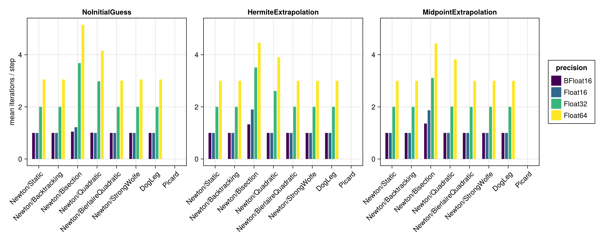
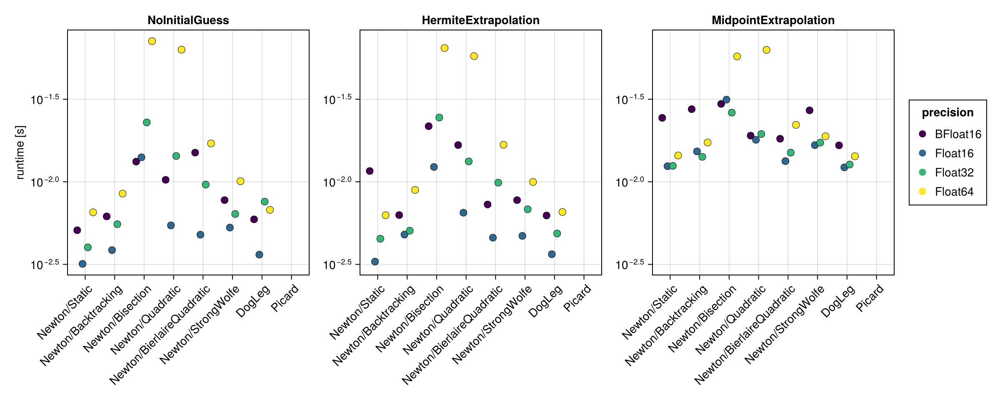
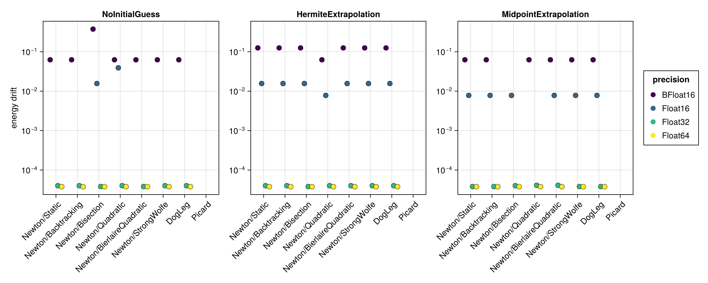

Toda Lattice
The Toda lattice is a nonlinear chain of particles with exponential nearest-neighbour interactions. It is built here with hodeproblem and a modest lattice size $N = 16$ (the full soliton example uses $N = 200$, which would make the implicit solves prohibitively expensive for a solver benchmark). The initial positions come from a bump of width $\mu = 0.3$ with zero initial momenta. The Hamiltonian $H(t, q, p)$ depends on both the coordinates and the momenta, so the energy-drift proxy is evaluated from the full $(q, p)$ state.
Unlike the Double Pendulum, this problem uses the framework's default residual tolerance $8\,\varepsilon(T)$: it does not have the double pendulum's raised residual floor, so relaxing the tolerance to $256\,\varepsilon(T)$ here buys only 3 converged runs out of 96 at $\Delta t = 0.1$ and 1 at $\Delta t = 1.0$, while costing one to two orders of magnitude of residual on every run that converges either way.
The benchmark below is regenerated at documentation build time with a single, fast timing pass. See the driver script scripts/midpoint_toda_lattice.jl for accurate BenchmarkTools measurements. The results are shown first for the standard step $\Delta t = 0.1$ and then repeated for a coarse step $\Delta t = 1.0$ (see Coarse time step (Δt = 1.0)).
using SolverBenchmark
spec = toda_lattice_spec(timespan = (0.0, 100.0), timestep = 0.1)
df = cached_sweep("toda_lattice_dt0.1") do
run_benchmark(spec; timing = :quick, verbose = false, quiet = true)
endConvergence
plot_convergence(df; title = "Toda Lattice")
Nonlinear iterations
Mean number of nonlinear-solver iterations per time step (converged runs only):
plot_iterations(df)
Run time
plot_runtime(df)
Energy drift
Drift of the conserved energy $H(t, q, p)$ of the Toda lattice:
plot_energy_drift(df)
Discussion
- The 16-dimensional implicit solve is the most expensive of the examples, so the run-time differences between solver configurations are more pronounced.
Float16,Float32andFloat64are indistinguishable in convergence (21/24 each at $\Delta t = 0.1$): despite being the highest-dimensional problem of the set, the Toda lattice is well conditioned, and the three failures in each column arePicard, which never converges here.BFloat16reaches only 7/24 at $\Delta t = 0.1$ but 21/24 at $\Delta t = 1.0$, matching the other three. The difference is not the solver but the time grid: at the finer stepBFloat16cannot represent $(0, 100)$ in increments of0.1, so the extrapolating initial guesses fail (see Harmonic Oscillator).- No closed-form solution is available, so accuracy is judged solely through the energy drift, which scales with the floating point precision.
Results table
markdown_table(summary_table(df))| precision | solver_label | initial_guess | converged | iterations_mean | runtime_s | max_residual | at_tolerance | energy_drift |
|---|---|---|---|---|---|---|---|---|
| BFloat16 | Newton/Static | NoInitialGuess | ✓ | 1 | 0.0458 | 0.0175 | ✓ | 0.0625 |
| BFloat16 | Newton/Static | HermiteExtrapolation | ✗ | — | — | — | ✗ | — |
| BFloat16 | Newton/Static | MidpointExtrapolation | ✗ | — | — | — | ✗ | — |
| BFloat16 | Newton/Backtracking | NoInitialGuess | ✓ | 1 | 0.0523 | 0.0175 | ✓ | 0.0625 |
| BFloat16 | Newton/Backtracking | HermiteExtrapolation | ✗ | — | — | — | ✗ | — |
| BFloat16 | Newton/Backtracking | MidpointExtrapolation | ✗ | — | — | — | ✗ | — |
| BFloat16 | Newton/Bisection | NoInitialGuess | ✓ | 1 | 0.133 | 0.0283 | ✓ | 0.0625 |
| BFloat16 | Newton/Bisection | HermiteExtrapolation | ✗ | — | — | — | ✗ | — |
| BFloat16 | Newton/Bisection | MidpointExtrapolation | ✗ | — | — | — | ✗ | — |
| BFloat16 | Newton/Quadratic | NoInitialGuess | ✓ | 1 | 0.108 | 0.0175 | ✓ | 0.0625 |
| BFloat16 | Newton/Quadratic | HermiteExtrapolation | ✗ | — | — | — | ✗ | — |
| BFloat16 | Newton/Quadratic | MidpointExtrapolation | ✗ | — | — | — | ✗ | — |
| BFloat16 | Newton/BierlaireQuadratic | NoInitialGuess | ✓ | 1 | 0.0901 | 0.0175 | ✓ | 0.0625 |
| BFloat16 | Newton/BierlaireQuadratic | HermiteExtrapolation | ✗ | — | — | — | ✗ | — |
| BFloat16 | Newton/BierlaireQuadratic | MidpointExtrapolation | ✗ | — | — | — | ✗ | — |
| BFloat16 | Newton/StrongWolfe | NoInitialGuess | ✓ | 1 | 0.0835 | 0.0175 | ✓ | 0.0625 |
| BFloat16 | Newton/StrongWolfe | HermiteExtrapolation | ✗ | — | — | — | ✗ | — |
| BFloat16 | Newton/StrongWolfe | MidpointExtrapolation | ✗ | — | — | — | ✗ | — |
| BFloat16 | DogLeg | NoInitialGuess | ✓ | 1 | 0.0517 | 0.0175 | ✓ | 0.0625 |
| BFloat16 | DogLeg | HermiteExtrapolation | ✗ | — | — | — | ✗ | — |
| BFloat16 | DogLeg | MidpointExtrapolation | ✗ | — | — | — | ✗ | — |
| BFloat16 | Picard | NoInitialGuess | ✗ | 1.05 | 0.0272 | 0.555 | ✗ | — |
| BFloat16 | Picard | HermiteExtrapolation | ✗ | — | — | — | ✗ | — |
| BFloat16 | Picard | MidpointExtrapolation | ✗ | — | — | — | ✗ | — |
| Float16 | Newton/Static | NoInitialGuess | ✓ | 1 | 0.0332 | 0.00218 | ✓ | 0 |
| Float16 | Newton/Static | HermiteExtrapolation | ✓ | 1 | 0.0275 | 0.00507 | ✓ | 0.00781 |
| Float16 | Newton/Static | MidpointExtrapolation | ✗ | — | — | — | ✗ | — |
| Float16 | Newton/Backtracking | NoInitialGuess | ✓ | 1 | 0.0349 | 0.00218 | ✓ | 0 |
| Float16 | Newton/Backtracking | HermiteExtrapolation | ✓ | 1 | 0.0812 | 0.00507 | ✓ | 0.00781 |
| Float16 | Newton/Backtracking | MidpointExtrapolation | ✗ | — | — | — | ✗ | — |
| Float16 | Newton/Bisection | NoInitialGuess | ✓ | 1.92 | 0.111 | 0.00766 | ✓ | 0 |
| Float16 | Newton/Bisection | HermiteExtrapolation | ✓ | 1.61 | 0.102 | 0.00781 | ✓ | 0.00781 |
| Float16 | Newton/Bisection | MidpointExtrapolation | ✗ | — | — | — | ✗ | — |
| Float16 | Newton/Quadratic | NoInitialGuess | ✓ | 1 | 0.0533 | 0.00241 | ✓ | 0 |
| Float16 | Newton/Quadratic | HermiteExtrapolation | ✓ | 1 | 0.0531 | 0.0056 | ✓ | 0.0156 |
| Float16 | Newton/Quadratic | MidpointExtrapolation | ✗ | — | — | — | ✗ | — |
| Float16 | Newton/BierlaireQuadratic | NoInitialGuess | ✓ | 1 | 0.0569 | 0.00218 | ✓ | 0 |
| Float16 | Newton/BierlaireQuadratic | HermiteExtrapolation | ✓ | 1 | 0.0424 | 0.00524 | ✓ | 0.00781 |
| Float16 | Newton/BierlaireQuadratic | MidpointExtrapolation | ✗ | — | — | — | ✗ | — |
| Float16 | Newton/StrongWolfe | NoInitialGuess | ✓ | 1 | 0.0448 | 0.00218 | ✓ | 0 |
| Float16 | Newton/StrongWolfe | HermiteExtrapolation | ✓ | 1 | 0.0383 | 0.00507 | ✓ | 0.00781 |
| Float16 | Newton/StrongWolfe | MidpointExtrapolation | ✗ | — | — | — | ✗ | — |
| Float16 | DogLeg | NoInitialGuess | ✓ | 1 | 0.0299 | 0.00218 | ✓ | 0 |
| Float16 | DogLeg | HermiteExtrapolation | ✓ | 1.28 | 0.0403 | 0.00226 | ✓ | 0.00781 |
| Float16 | DogLeg | MidpointExtrapolation | ✗ | — | — | — | ✗ | — |
| Float16 | Picard | NoInitialGuess | ✗ | 2.05 | 0.0343 | 0.396 | ✗ | — |
| Float16 | Picard | HermiteExtrapolation | ✗ | — | — | — | ✗ | — |
| Float16 | Picard | MidpointExtrapolation | ✗ | — | — | — | ✗ | — |
| Float32 | Newton/Static | NoInitialGuess | ✓ | 1.07 | 0.026 | 9.49e-07 | ✓ | 5.72e-06 |
| Float32 | Newton/Static | HermiteExtrapolation | ✓ | 1 | 0.0897 | 3.07e-07 | ✓ | 6.68e-06 |
| Float32 | Newton/Static | MidpointExtrapolation | ✓ | 1 | 0.156 | 3.27e-07 | ✓ | 6.68e-06 |
| Float32 | Newton/Backtracking | NoInitialGuess | ✓ | 1.07 | 0.0617 | 9.49e-07 | ✓ | 5.72e-06 |
| Float32 | Newton/Backtracking | HermiteExtrapolation | ✓ | 1 | 0.032 | 3.07e-07 | ✓ | 6.68e-06 |
| Float32 | Newton/Backtracking | MidpointExtrapolation | ✓ | 1 | 0.127 | 3.27e-07 | ✓ | 6.68e-06 |
| Float32 | Newton/Bisection | NoInitialGuess | ✓ | 2.17 | 0.513 | 9.5e-07 | ✓ | 5.72e-06 |
| Float32 | Newton/Bisection | HermiteExtrapolation | ✓ | 2.73 | 0.177 | 9.48e-07 | ✓ | 6.68e-06 |
| Float32 | Newton/Bisection | MidpointExtrapolation | ✓ | 2.78 | 0.225 | 9.5e-07 | ✓ | 6.68e-06 |
| Float32 | Newton/Quadratic | NoInitialGuess | ✓ | 1.06 | 0.104 | 9.51e-07 | ✓ | 6.68e-06 |
| Float32 | Newton/Quadratic | HermiteExtrapolation | ✓ | 2 | 0.112 | 4.18e-07 | ✓ | 6.68e-06 |
| Float32 | Newton/Quadratic | MidpointExtrapolation | ✓ | 1.5 | 0.178 | 3.03e-07 | ✓ | 6.68e-06 |
| Float32 | Newton/BierlaireQuadratic | NoInitialGuess | ✓ | 1.07 | 0.0676 | 9.49e-07 | ✓ | 5.72e-06 |
| Float32 | Newton/BierlaireQuadratic | HermiteExtrapolation | ✓ | 1 | 0.0557 | 3.07e-07 | ✓ | 6.68e-06 |
| Float32 | Newton/BierlaireQuadratic | MidpointExtrapolation | ✓ | 1 | 0.131 | 3.27e-07 | ✓ | 6.68e-06 |
| Float32 | Newton/StrongWolfe | NoInitialGuess | ✓ | 1.07 | 0.0485 | 9.49e-07 | ✓ | 5.72e-06 |
| Float32 | Newton/StrongWolfe | HermiteExtrapolation | ✓ | 1 | 0.0543 | 3.07e-07 | ✓ | 6.68e-06 |
| Float32 | Newton/StrongWolfe | MidpointExtrapolation | ✓ | 1 | 0.137 | 3.27e-07 | ✓ | 6.68e-06 |
| Float32 | DogLeg | NoInitialGuess | ✓ | 1.07 | 0.0313 | 9.49e-07 | ✓ | 5.72e-06 |
| Float32 | DogLeg | HermiteExtrapolation | ✓ | 1 | 0.0297 | 3.07e-07 | ✓ | 6.68e-06 |
| Float32 | DogLeg | MidpointExtrapolation | ✓ | 1 | 0.114 | 3.27e-07 | ✓ | 6.68e-06 |
| Float32 | Picard | NoInitialGuess | ✗ | 2.05 | 0.0604 | 0.377 | ✗ | — |
| Float32 | Picard | HermiteExtrapolation | ✗ | 2 | 0.0613 | 0.0023 | ✗ | — |
| Float32 | Picard | MidpointExtrapolation | ✗ | 2 | 0.145 | 0.000621 | ✗ | — |
| Float64 | Newton/Static | NoInitialGuess | ✓ | 2 | 0.0663 | 5.68e-16 | ✓ | 8.45e-06 |
| Float64 | Newton/Static | HermiteExtrapolation | ✓ | 2 | 0.052 | 6.1e-16 | ✓ | 8.45e-06 |
| Float64 | Newton/Static | MidpointExtrapolation | ✓ | 2 | 0.141 | 5.97e-16 | ✓ | 8.45e-06 |
| Float64 | Newton/Backtracking | NoInitialGuess | ✓ | 2 | 0.0654 | 5.68e-16 | ✓ | 8.45e-06 |
| Float64 | Newton/Backtracking | HermiteExtrapolation | ✓ | 2 | 0.076 | 6.1e-16 | ✓ | 8.45e-06 |
| Float64 | Newton/Backtracking | MidpointExtrapolation | ✓ | 2 | 0.165 | 5.97e-16 | ✓ | 8.45e-06 |
| Float64 | Newton/Bisection | NoInitialGuess | ✓ | 4.31 | 0.706 | 1.77e-15 | ✓ | 8.45e-06 |
| Float64 | Newton/Bisection | HermiteExtrapolation | ✓ | 4.53 | 0.656 | 1.67e-15 | ✓ | 8.45e-06 |
| Float64 | Newton/Bisection | MidpointExtrapolation | ✓ | 4.33 | 0.649 | 1.66e-15 | ✓ | 8.45e-06 |
| Float64 | Newton/Quadratic | NoInitialGuess | ✓ | 3.95 | 0.313 | 1.77e-15 | ✓ | 8.45e-06 |
| Float64 | Newton/Quadratic | HermiteExtrapolation | ✓ | 2.77 | 0.352 | 1.77e-15 | ✓ | 8.45e-06 |
| Float64 | Newton/Quadratic | MidpointExtrapolation | ✓ | 2.87 | 0.428 | 1.61e-15 | ✓ | 8.45e-06 |
| Float64 | Newton/BierlaireQuadratic | NoInitialGuess | ✓ | 2 | 0.173 | 6.27e-16 | ✓ | 8.45e-06 |
| Float64 | Newton/BierlaireQuadratic | HermiteExtrapolation | ✓ | 2 | 0.262 | 6.17e-16 | ✓ | 8.45e-06 |
| Float64 | Newton/BierlaireQuadratic | MidpointExtrapolation | ✓ | 2 | 0.191 | 5.65e-16 | ✓ | 8.45e-06 |
| Float64 | Newton/StrongWolfe | NoInitialGuess | ✓ | 2 | 0.0742 | 5.68e-16 | ✓ | 8.45e-06 |
| Float64 | Newton/StrongWolfe | HermiteExtrapolation | ✓ | 2 | 0.102 | 6.1e-16 | ✓ | 8.45e-06 |
| Float64 | Newton/StrongWolfe | MidpointExtrapolation | ✓ | 2 | 0.294 | 5.97e-16 | ✓ | 8.45e-06 |
| Float64 | DogLeg | NoInitialGuess | ✓ | 2 | 0.0426 | 5.68e-16 | ✓ | 8.45e-06 |
| Float64 | DogLeg | HermiteExtrapolation | ✓ | 2 | 0.0452 | 6.1e-16 | ✓ | 8.45e-06 |
| Float64 | DogLeg | MidpointExtrapolation | ✓ | 2 | 0.124 | 5.97e-16 | ✓ | 8.45e-06 |
| Float64 | Picard | NoInitialGuess | ✗ | 2.05 | 0.103 | 0.377 | ✗ | — |
| Float64 | Picard | HermiteExtrapolation | ✗ | 2 | 0.101 | 0.00222 | ✗ | — |
| Float64 | Picard | MidpointExtrapolation | ✗ | 2 | 0.183 | 0.00062 | ✗ | — |
Coarse time step (Δt = 1.0)
With a ten times larger step the nonlinear solves per step become harder, which stresses the solvers more than the $\Delta t = 0.1$ results above.
spec1 = toda_lattice_spec(timespan = (0.0, 100.0), timestep = 1.0)
df1 = cached_sweep("toda_lattice_dt1.0") do
run_benchmark(spec1; timing = :quick, verbose = false, quiet = true)
endConvergence
plot_convergence(df1; title = "Toda Lattice (Δt = 1.0)")
Nonlinear iterations
plot_iterations(df1)
Run time
plot_runtime(df1)
Energy drift
plot_energy_drift(df1)
Results table
markdown_table(summary_table(df1))| precision | solver_label | initial_guess | converged | iterations_mean | runtime_s | max_residual | at_tolerance | energy_drift |
|---|---|---|---|---|---|---|---|---|
| BFloat16 | Newton/Static | NoInitialGuess | ✓ | 1 | 0.00509 | 0.0176 | ✓ | 0.0625 |
| BFloat16 | Newton/Static | HermiteExtrapolation | ✓ | 1 | 0.0116 | 0.0371 | ✓ | 0.125 |
| BFloat16 | Newton/Static | MidpointExtrapolation | ✓ | 1 | 0.0244 | 0.0162 | ✓ | 0.0625 |
| BFloat16 | Newton/Backtracking | NoInitialGuess | ✓ | 1 | 0.00617 | 0.0176 | ✓ | 0.0625 |
| BFloat16 | Newton/Backtracking | HermiteExtrapolation | ✓ | 1 | 0.00629 | 0.0371 | ✓ | 0.125 |
| BFloat16 | Newton/Backtracking | MidpointExtrapolation | ✓ | 1 | 0.0275 | 0.0162 | ✓ | 0.0625 |
| BFloat16 | Newton/Bisection | NoInitialGuess | ✓ | 1.05 | 0.0132 | 0.061 | ✓ | 0.375 |
| BFloat16 | Newton/Bisection | HermiteExtrapolation | ✓ | 1.33 | 0.0217 | 0.062 | ✓ | 0.125 |
| BFloat16 | Newton/Bisection | MidpointExtrapolation | ✓ | 1.36 | 0.0296 | 0.0603 | ✓ | 0 |
| BFloat16 | Newton/Quadratic | NoInitialGuess | ✓ | 1.01 | 0.0103 | 0.0184 | ✓ | 0.0625 |
| BFloat16 | Newton/Quadratic | HermiteExtrapolation | ✓ | 1 | 0.0167 | 0.0371 | ✓ | 0.0625 |
| BFloat16 | Newton/Quadratic | MidpointExtrapolation | ✓ | 1 | 0.019 | 0.0234 | ✓ | 0.0625 |
| BFloat16 | Newton/BierlaireQuadratic | NoInitialGuess | ✓ | 1 | 0.015 | 0.0176 | ✓ | 0.0625 |
| BFloat16 | Newton/BierlaireQuadratic | HermiteExtrapolation | ✓ | 1 | 0.00729 | 0.0371 | ✓ | 0.125 |
| BFloat16 | Newton/BierlaireQuadratic | MidpointExtrapolation | ✓ | 1 | 0.0182 | 0.0162 | ✓ | 0.0625 |
| BFloat16 | Newton/StrongWolfe | NoInitialGuess | ✓ | 1 | 0.00775 | 0.0176 | ✓ | 0.0625 |
| BFloat16 | Newton/StrongWolfe | HermiteExtrapolation | ✓ | 1 | 0.00775 | 0.0371 | ✓ | 0.125 |
| BFloat16 | Newton/StrongWolfe | MidpointExtrapolation | ✓ | 1 | 0.0271 | 0.0162 | ✓ | 0.0625 |
| BFloat16 | DogLeg | NoInitialGuess | ✓ | 1 | 0.00592 | 0.0176 | ✓ | 0.0625 |
| BFloat16 | DogLeg | HermiteExtrapolation | ✓ | 1 | 0.00625 | 0.0371 | ✓ | 0.125 |
| BFloat16 | DogLeg | MidpointExtrapolation | ✓ | 1 | 0.0166 | 0.0162 | ✓ | 0.0625 |
| BFloat16 | Picard | NoInitialGuess | ✗ | — | — | — | ✗ | — |
| BFloat16 | Picard | HermiteExtrapolation | ✗ | — | — | — | ✗ | — |
| BFloat16 | Picard | MidpointExtrapolation | ✗ | 2.07 | 0.0142 | 0.441 | ✗ | — |
| Float16 | Newton/Static | NoInitialGuess | ✓ | 1 | 0.00319 | 0.0046 | ✓ | 0 |
| Float16 | Newton/Static | HermiteExtrapolation | ✓ | 1 | 0.00329 | 0.00241 | ✓ | 0.0156 |
| Float16 | Newton/Static | MidpointExtrapolation | ✓ | 1 | 0.0124 | 0.00197 | ✓ | 0.00781 |
| Float16 | Newton/Backtracking | NoInitialGuess | ✓ | 1 | 0.00386 | 0.0046 | ✓ | 0 |
| Float16 | Newton/Backtracking | HermiteExtrapolation | ✓ | 1 | 0.00479 | 0.00241 | ✓ | 0.0156 |
| Float16 | Newton/Backtracking | MidpointExtrapolation | ✓ | 1 | 0.0153 | 0.00197 | ✓ | 0.00781 |
| Float16 | Newton/Bisection | NoInitialGuess | ✓ | 1.22 | 0.0141 | 0.00664 | ✓ | 0.0156 |
| Float16 | Newton/Bisection | HermiteExtrapolation | ✓ | 1.9 | 0.0123 | 0.00774 | ✓ | 0.0156 |
| Float16 | Newton/Bisection | MidpointExtrapolation | ✓ | 1.87 | 0.0314 | 0.00697 | ✓ | 0.00781 |
| Float16 | Newton/Quadratic | NoInitialGuess | ✓ | 1 | 0.00545 | 0.00766 | ✓ | 0.0391 |
| Float16 | Newton/Quadratic | HermiteExtrapolation | ✓ | 1 | 0.0065 | 0.00264 | ✓ | 0.00781 |
| Float16 | Newton/Quadratic | MidpointExtrapolation | ✓ | 1 | 0.018 | 0.0023 | ✓ | 0 |
| Float16 | Newton/BierlaireQuadratic | NoInitialGuess | ✓ | 1 | 0.00478 | 0.0046 | ✓ | 0 |
| Float16 | Newton/BierlaireQuadratic | HermiteExtrapolation | ✓ | 1 | 0.00459 | 0.00241 | ✓ | 0.0156 |
| Float16 | Newton/BierlaireQuadratic | MidpointExtrapolation | ✓ | 1 | 0.0133 | 0.00197 | ✓ | 0.00781 |
| Float16 | Newton/StrongWolfe | NoInitialGuess | ✓ | 1 | 0.00528 | 0.0046 | ✓ | 0 |
| Float16 | Newton/StrongWolfe | HermiteExtrapolation | ✓ | 1 | 0.00471 | 0.00241 | ✓ | 0.0156 |
| Float16 | Newton/StrongWolfe | MidpointExtrapolation | ✓ | 1 | 0.0167 | 0.00197 | ✓ | 0.00781 |
| Float16 | DogLeg | NoInitialGuess | ✓ | 1 | 0.00362 | 0.0046 | ✓ | 0 |
| Float16 | DogLeg | HermiteExtrapolation | ✓ | 1 | 0.00364 | 0.00241 | ✓ | 0.0156 |
| Float16 | DogLeg | MidpointExtrapolation | ✓ | 1 | 0.0122 | 0.00197 | ✓ | 0.00781 |
| Float16 | Picard | NoInitialGuess | ✗ | — | — | — | ✗ | — |
| Float16 | Picard | HermiteExtrapolation | ✗ | — | — | — | ✗ | — |
| Float16 | Picard | MidpointExtrapolation | ✗ | 2 | 0.0139 | 0.0504 | ✗ | — |
| Float32 | Newton/Static | NoInitialGuess | ✓ | 2 | 0.00401 | 5.05e-07 | ✓ | 4.01e-05 |
| Float32 | Newton/Static | HermiteExtrapolation | ✓ | 2 | 0.00452 | 2.79e-07 | ✓ | 4.01e-05 |
| Float32 | Newton/Static | MidpointExtrapolation | ✓ | 2 | 0.0125 | 2.55e-07 | ✓ | 3.81e-05 |
| Float32 | Newton/Backtracking | NoInitialGuess | ✓ | 2 | 0.00554 | 5.05e-07 | ✓ | 4.01e-05 |
| Float32 | Newton/Backtracking | HermiteExtrapolation | ✓ | 2 | 0.00506 | 2.79e-07 | ✓ | 4.01e-05 |
| Float32 | Newton/Backtracking | MidpointExtrapolation | ✓ | 2 | 0.0142 | 2.55e-07 | ✓ | 3.81e-05 |
| Float32 | Newton/Bisection | NoInitialGuess | ✓ | 3.68 | 0.0229 | 9.35e-07 | ✓ | 3.81e-05 |
| Float32 | Newton/Bisection | HermiteExtrapolation | ✓ | 3.51 | 0.0245 | 9.34e-07 | ✓ | 3.81e-05 |
| Float32 | Newton/Bisection | MidpointExtrapolation | ✓ | 3.11 | 0.0262 | 9.33e-07 | ✓ | 4.01e-05 |
| Float32 | Newton/Quadratic | NoInitialGuess | ✓ | 2.98 | 0.0143 | 4.05e-07 | ✓ | 4.01e-05 |
| Float32 | Newton/Quadratic | HermiteExtrapolation | ✓ | 2.61 | 0.0133 | 2.78e-07 | ✓ | 4.01e-05 |
| Float32 | Newton/Quadratic | MidpointExtrapolation | ✓ | 2.01 | 0.0195 | 9.41e-07 | ✓ | 4.1e-05 |
| Float32 | Newton/BierlaireQuadratic | NoInitialGuess | ✓ | 2 | 0.00962 | 3.96e-07 | ✓ | 3.81e-05 |
| Float32 | Newton/BierlaireQuadratic | HermiteExtrapolation | ✓ | 2 | 0.00988 | 2.77e-07 | ✓ | 4.01e-05 |
| Float32 | Newton/BierlaireQuadratic | MidpointExtrapolation | ✓ | 2 | 0.015 | 2.77e-07 | ✓ | 4.1e-05 |
| Float32 | Newton/StrongWolfe | NoInitialGuess | ✓ | 2 | 0.00639 | 5.05e-07 | ✓ | 4.01e-05 |
| Float32 | Newton/StrongWolfe | HermiteExtrapolation | ✓ | 2 | 0.00682 | 2.79e-07 | ✓ | 4.01e-05 |
| Float32 | Newton/StrongWolfe | MidpointExtrapolation | ✓ | 2 | 0.0173 | 2.55e-07 | ✓ | 3.81e-05 |
| Float32 | DogLeg | NoInitialGuess | ✓ | 2 | 0.00759 | 5.05e-07 | ✓ | 4.01e-05 |
| Float32 | DogLeg | HermiteExtrapolation | ✓ | 2 | 0.00486 | 2.79e-07 | ✓ | 4.01e-05 |
| Float32 | DogLeg | MidpointExtrapolation | ✓ | 2 | 0.0127 | 2.55e-07 | ✓ | 3.81e-05 |
| Float32 | Picard | NoInitialGuess | ✗ | — | — | — | ✗ | — |
| Float32 | Picard | HermiteExtrapolation | ✗ | — | — | — | ✗ | — |
| Float32 | Picard | MidpointExtrapolation | ✗ | 2 | 0.0137 | 0.0367 | ✗ | — |
| Float64 | Newton/Static | NoInitialGuess | ✓ | 3.05 | 0.00653 | 1.73e-15 | ✓ | 3.78e-05 |
| Float64 | Newton/Static | HermiteExtrapolation | ✓ | 3 | 0.00627 | 5.19e-16 | ✓ | 3.78e-05 |
| Float64 | Newton/Static | MidpointExtrapolation | ✓ | 3 | 0.0144 | 5.09e-16 | ✓ | 3.78e-05 |
| Float64 | Newton/Backtracking | NoInitialGuess | ✓ | 3.05 | 0.00849 | 1.73e-15 | ✓ | 3.78e-05 |
| Float64 | Newton/Backtracking | HermiteExtrapolation | ✓ | 3 | 0.00893 | 5.19e-16 | ✓ | 3.78e-05 |
| Float64 | Newton/Backtracking | MidpointExtrapolation | ✓ | 3 | 0.0173 | 5.09e-16 | ✓ | 3.78e-05 |
| Float64 | Newton/Bisection | NoInitialGuess | ✓ | 5.15 | 0.0711 | 4.8e-16 | ✓ | 3.78e-05 |
| Float64 | Newton/Bisection | HermiteExtrapolation | ✓ | 4.46 | 0.0646 | 4.66e-16 | ✓ | 3.78e-05 |
| Float64 | Newton/Bisection | MidpointExtrapolation | ✓ | 4.43 | 0.0574 | 1.61e-15 | ✓ | 3.78e-05 |
| Float64 | Newton/Quadratic | NoInitialGuess | ✓ | 4.15 | 0.0631 | 8.84e-16 | ✓ | 3.78e-05 |
| Float64 | Newton/Quadratic | HermiteExtrapolation | ✓ | 3.91 | 0.0577 | 1.73e-15 | ✓ | 3.78e-05 |
| Float64 | Newton/Quadratic | MidpointExtrapolation | ✓ | 3.82 | 0.0629 | 1.73e-15 | ✓ | 3.78e-05 |
| Float64 | Newton/BierlaireQuadratic | NoInitialGuess | ✓ | 3.01 | 0.0171 | 1.23e-15 | ✓ | 3.78e-05 |
| Float64 | Newton/BierlaireQuadratic | HermiteExtrapolation | ✓ | 3 | 0.0168 | 5.32e-16 | ✓ | 3.78e-05 |
| Float64 | Newton/BierlaireQuadratic | MidpointExtrapolation | ✓ | 3 | 0.0221 | 5.06e-16 | ✓ | 3.78e-05 |
| Float64 | Newton/StrongWolfe | NoInitialGuess | ✓ | 3.05 | 0.0101 | 1.73e-15 | ✓ | 3.78e-05 |
| Float64 | Newton/StrongWolfe | HermiteExtrapolation | ✓ | 3 | 0.00997 | 5.19e-16 | ✓ | 3.78e-05 |
| Float64 | Newton/StrongWolfe | MidpointExtrapolation | ✓ | 3 | 0.0189 | 5.09e-16 | ✓ | 3.78e-05 |
| Float64 | DogLeg | NoInitialGuess | ✓ | 3.05 | 0.00676 | 1.73e-15 | ✓ | 3.78e-05 |
| Float64 | DogLeg | HermiteExtrapolation | ✓ | 3 | 0.00657 | 5.19e-16 | ✓ | 3.78e-05 |
| Float64 | DogLeg | MidpointExtrapolation | ✓ | 3 | 0.0143 | 5.09e-16 | ✓ | 3.78e-05 |
| Float64 | Picard | NoInitialGuess | ✗ | — | — | — | ✗ | — |
| Float64 | Picard | HermiteExtrapolation | ✗ | — | — | — | ✗ | — |
| Float64 | Picard | MidpointExtrapolation | ✗ | 2 | 0.0183 | 0.0367 | ✗ | — |